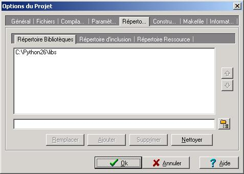

Le scripting est une méthode qui permet de modifier ou exécuter du code sans avoir à recompiler le programme, juste en modifiant des fichiers de scripts. L'un des meilleurs exemples est votre navigateur Web, probablement codé en C ou en C++, mais contrôlable grâce au langage Javascript. Ici, nous allons voir comment utiliser l'interpréteur Python dans un programme en C++.
Tout d'abord, nous allons voir ce dont nous avons besoin pour intégrer l'interpréteur de Python dans nos programmes en C++ :
Une version de Python (dans le tuto, j'utiliserai la 2.6)
Un IDE (dans le tuto, j'utiliserai Dev-C++). Si vous compilez sans IDE, il faudra alors vous adapter ;) .
Maintenant, il faut créer notre projet. Appelez-le comme vous le souhaitez, laissez le projet en "Console application". Ensuite, allez dans les options du projet (Alt+P sous Dev-C++). Allez dans l'onglet "Répertoires". Dans la catégorie "Répertoire Bibliothèques" rajoutez le chemin vers le dossier "libs" de Python (par exemple : C:\Python26\libs) :

Puis, dans la catégorie "Répertoire d'inclusion" rajoutez le chemin vers le dossier "include" de Python (par exemple : C:\Python26\include) :
A présent, choisissez l'onglet "Paramètres" et ajoutez "-lPython26" dans "Editeur de liens" (si vous n'avez pas Python 2.6 ; il faudra changer les deux chiffres) :
Enfin, dans votre source, il faut rajouter :
#include <Python.h>
Pour distribuer vos programmes, il vous faudra la DLL de Python (dans mon cas : Python26.dll). Essayez de la trouver dans C:\Windows\system32. Si vous ne la trouvez pas, voici un lien vers elle (lien Megaupload) : Python26.dll. Une fois cette DLL obtenue, il faut la copier dans le dossier de votre exécutable.
Voilà, vous êtes prêts pour programmer en Python depuis un code en C++ et vice-versa :waw: !
Cependant, avant de commencer à programmer, il faut savoir que les variables utilisées avec Python seront des pointeurs de type PyObject. Tout : un nombre, une chaîne, etc...
Il y a deux façons d'exécuter du code Python dans un programme en C++ (elles reviennent à peu près au même) : directement à partir d'une chaîne (telle que "print 'test'" ) ou à partir d'un fichier.
Mais d'abord, il faut initialiser l'interpréteur. Heureusement, il suffit simplement de faire appel à la fonction void Py_Initialize(); . Si vous voulez mettre l'interpréteur dans le même environnement que le programme, il faudra lui passer la première chaîne de argv comme ceci :
int main(int argc, char *argv[])
{
Py_SetProgramName(argv[0]);
/* Tout le reste*/
return 0;
}
Exécuter une chaîne
Bonne nouvelle ! Il existe une fonction simple permettant d'exécuter une chaîne : int PyRun_SimpleStringFlags(const char *commande, PyCompilerFlags *flags); où commande est la chaîne en question et flags des flags pour le compilateur. Nous n'utiliserons pas cette variable, nous la laisserons donc à NULL . C'est tout :magicien: ! Ainsi, nous pouvons créer une fonction ou une macro exec prenant pour argument un char * (ne pas oublier de faire un reinterpret_cast ) :
#include <cstdlib>
#include <Python.h>
void exec(char *commandes);
int main(int argc,char *argv[])
{
Py_Initialize();
exec("print 'test'"); // Affiche "test"
exec("a=3\n\
print str(a)"); //Waouh ! Ca fonctionne sur plusieurs lignes !
exec("b=5");
exec("print str(b)"); //Ca fonctionne même avec un appel différent à exec !
system("pause");
return 0;
}
void exec(char *commandes)
{
PyRun_SimpleStringFlags(reinterpret_cast<const char*>(commandes),NULL);
}
Exécuter un fichier
Pas la peine de faire une fonction très compliquée. Il existe une fonction int PyRun_SimpleFile(FILE *fp, const char *nom); où fp est un pointeur sur le fichier et nom le nom du fichier. Il faut d'abord créer un pointeur de type PyObject qui contiendra le fichier :
PyObject *fichier=PyFile_FromString(fn,"r");
Ensuite, il faut tester si elle est valide ou pas. Dans le cas où elle n'est pas valide, sa valeur vaudra NULL. Ensuite, il faut transformer cette variable en pointeur de fichier avec : FILE* PyFile_AsFile(PyObject *p); Après avoir passé cette variable à PyRun_SimpleFile, il faut libérer la variable contenant le pointeur sur le fichier avec void Py_DECREF(PyObject *o); .
Ainsi, on se retrouve avec un code du genre :
bool run_py(char *fn) // Le type bool sert à renvoyer si le fichier a pu être lu ou pas
{
PyObject *fichier=PyFile_FromString(fn,"r");
if(fichier==NULL)
return false;
PyRun_SimpleFile(PyFile_AsFile(fichier),fn);
Py_DECREF(fichier);
return true;
}
Maintenant, nous allons voir comment exécuter une fonction écrite dans la source C++ dans un script Python.
Nous allons apprendre à utiliser une fonction écrite dans un code C++ dans un script Python. Attention, il ne s'agit pas d'interpréter du C++ dans Python, mais juste d'appeler des fonctions qui sont codées sous une certaine forme que nous verrons bientôt. Mais tout d'abord, il faut comprendre le mécanisme des modules en Python. Vous le connaissez sûrement, mais il est bon de se le rappeler. En effet, les fonctions ne seront utilisables par l'interpréteur Python si et seulement si vous les déclarez dans un module. En Python, voici un exemple de code utilisant un module :
import math #On importe le module
print str(math.cos(0))
A présent, nous pouvons coder une fonction que nous intégrerons plus tard dans un module. Nous allons créer une fonction qui prend en argument un nombre et qui en retourne le carré. En C++ "pur", nous aurions écrit :
int carre(int n)
{
return n*n;
}
Sachez que toutes les fonctions Python doivent retourner un pointeur de type Py0bject.
Mais si on ne veut rien retourner ?
Dans ce cas, nous allons retourner l'équivalent de None : Py_None. Nos fonctions devront comporter deux arguments : deux pointeurs de type PyObject. Le premier argument ne sera utile que s'il s'agit d'une méthode (dans une classe, donc) sinon elle vaudra NULL : c'est la variable self que l'on retrouve en Python comme ceci :
class Test:
def __init__(self):
self.x=0
L'autre argument représente les arguments sous forme de tuple. Déjà, voyons le prototype de notre fonction :
PyObject *carre(PyObject *self,PyObject *args);
Maintenant, il faut savoir extraire les arguments contenus dans la variable args. Nous allons utiliser une fonction qui peut s'apparenter à scanf : int PyArg_ParseTuple(PyObject *args, const char *format, ...); Cependant, le contenu de la variable format sera différent du format que l'on a avec scanf. Par exemple, pour une chaîne, avec scanf nous utilisons "%s" , alors qu'avec PyArg_ParseTuple nous utiliserons "s" . Voici une petite liste de types (la complète se trouve ici) :
s : chaîne de caractères
z : comme s, sauf que la valeur peut être NULL
b : octet non signé (unsigned char )
c : caractère (char )
h : short int
H : unsigned short int
i : int
I : unsigned int
f : float
d : double
o : un objet de type quelconque sans cast
Par exemple, si vous voulez récupérer un int , un float et un char , il faudra faire :
int entier;
float flottant;
char caractere;
PyArg_ParseTuple(args,"ifc",&entier,&flottant,&caractere);
char *chaine;
int longueur;
PyArg_ParseTuple(args,"s#",&chaine,&longueur);
Autre différence avec scanf : il faut mettre le signe '&' même devant une chaîne de caractère, sinon c'est l'erreur de segmentation assurée ^^ !
Pour la valeur de retour, nous allons utiliser le procédé inverse : on donne le contenu du tuple qui sera compilé en un pointeur de type PyObject grâce à la fonction PyObject* Py_BuildValue(const char *format, ...); . Par exemple, pour retourner la variable retour de type int , on fera :
int resultat=42;
return Py_BuildValue("i",resultat);
Donc revenons à nos moutons. Il faut créer une fonction qui retourne le nombre passé en argument au carré. A vos claviers :) ! Petite correction :
PyObject *carre(PyObject *self, PyObject *args)
{
int x=0;
PyArg_ParseTuple(args,"i",&x); //On récupère le nombre passé en argument
return Py_BuildValue("i",x*x); //On retourne le nombre au carré
}
Et ce n'est pas tout :diable: ! Pour utiliser cette fonction via un script Python, il va falloir créer notre module. Vous l'appelez comme vous le voulez (pour moi ce sera "mathC"). Notre module sera contenu dans un tableau de type PyMethodDef défini comme ceci :
Expliquons cette instruction. Chaque méthode doit être définie par un tableau sous la forme :
Nom de la fonction : const char*
Callback vers la fonction
Type d'arguments (on va laisser à METH_VARARGS ; pour une liste complète voir ici)
Une chaîne de caractères qui ne nous sert à rien, nous la laisserons à NULL
Ensuite, le module est un tableau de méthodes. Mais il faut mettre une méthode vide ({NULL,NULL,0,NULL} ) sinon vous vous retrouverez avec une belle erreur lors de l'exécution ^^ ... Dernière étape (enfin ;) ) : initialiser le module. Nous utiliserons la fonction PyObject* Py_InitModule(char *nom, PyMethodDef *methodes); où name est le nom du module à créer et méthodes votre tableau de méthodes (ici module_mathC) :
Maintenant, il faut aller dans le code en Python. Il faut importer le module. Vous avez différents choix :
import mathC
#Ou
from mathC import carre
#Ou encore
from mathC import *
Sachant que dans le premier cas, pour accéder à la fonction carre, il faudra écrire mathC.carre , et dans les deux autres il faudra écrire carre tout simplement. Voici un exemple de script :
from mathC import *
x=input("Entrez un nombre : ")
print "Voici son carre : "+str(carre(x))
Si vous l'enregistrez dans un fichier .py, vous pouvez le lancer, mais vous aurez une erreur disant que le module "mathC" n'existe pas. Par contre, si vous exécutez ce fichier via la fonction run_py (que nous avions créée auparavant) après l'appel à Py_InitModule, le code s'exécutera. On vous demandera d'entrer un nombre, puis son carré sera affiché. Simple, non ;) ?
Et voilà, vous pouvez utiliser Python dans vos applications en C++ :soleil: !